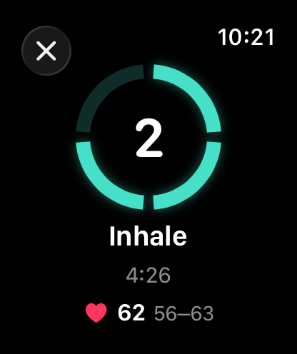
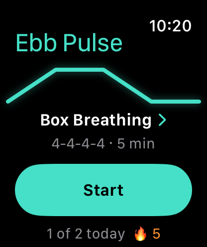
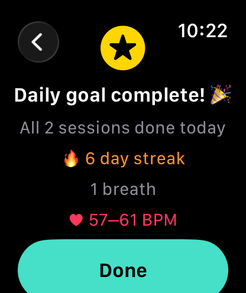

EBB PULSE
Breathe by touch.
A breathing app for Apple Watch that you feel, not watch. Close your eyes and follow your wrist.



How it feels
- Up taps mean breathe in.
- Down taps mean breathe out.
- Silence means hold.
- A double tap starts each new phase, after a 3-2-1 lead-in.
Make it yours
- Pick a technique — Calm, Box, 4-7-8 and more — or set your own inhale, hold, exhale and hold.
- Sessions by minutes or by number of breaths.
- Live heart rate, with its range across your session.
- A daily goal with streaks and gentle, spaced reminders.
- Start from Siri, the Action Button, or a watch-face complication.
Private by design
Everything stays on your Watch. No account, no ads, no tracking, and nothing is saved to the Health app. Read the privacy policy.
Support
Questions, bugs or ideas? Email sanya@monica.in and we'll get back to you.
Do I need an iPhone app?
No. Ebb Pulse runs on the Apple Watch by itself.
What is the Health access for?
Ebb Pulse reads your heart rate during a session and starts a short on-wrist session so your Watch keeps the app in front while you breathe. The session is always discarded and nothing is written to Health. You can withdraw access any time in Health settings.
My heart rate isn't showing.
Check that Heart rate is on in the app's Settings, that Health access is allowed, and that the Watch fits snugly. Heart rate needs a real Watch on your wrist.
The screen updates only once a second when my wrist is down.
That is how Apple Watch dims its display to save power. The ring steps once a second then, and your haptics are unaffected.
How do I start with my voice or the Action Button?
Say "Start Ebb Pulse" to Siri, or assign the Ebb Pulse shortcut to the Action Button in the Watch's Settings.
Reminders aren't arriving.
Make sure Reminders is on in the app's Settings and that notifications are allowed for Ebb Pulse in the Watch's Notifications settings.
How do I delete my data?
Delete the app from your Watch. Everything it stores goes with it.
Ebb Pulse is for relaxation and general wellness. It is not a medical device and does not diagnose, treat or prevent any condition. If you feel dizzy or lightheaded, stop and breathe normally.